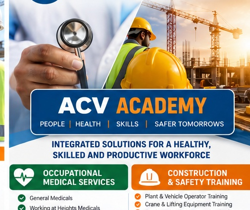
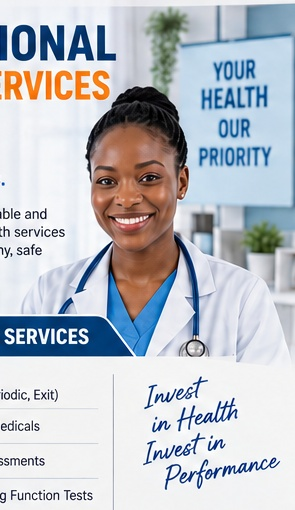
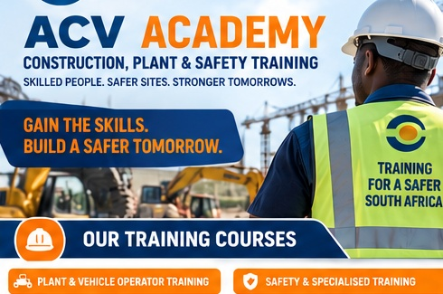
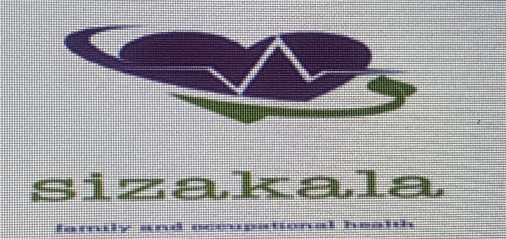

General Medicals
Pre-employment, periodic, exit and other workplace medical assessments.
Integrated occupational medical and workplace training solutions for organisations across South Africa.

AFRICA CORPORATE VISION
ACV is positioned to support employers with practical occupational health services and workforce training — helping businesses keep people fit for work, improve safety and strengthen capability.
OCCUPATIONAL HEALTH
Workplace-focused medical assessments designed to support employee fitness, health and safe placement.

Pre-employment, periodic, exit and other workplace medical assessments.
Medical assessments for employees exposed to elevated work environments.
Assessments supporting safe and appropriate workplace placement.
Occupational screening services where appropriate to the role.
Workplace screening services subject to applicable procedures and requirements.
Practical options for employers needing assessments at the workplace.
ACV ACADEMY
Construction, plant, occupational health and safety training categories for individuals and businesses.

Forklift • Reach Truck • Tele Boom Handler • Overhead Crane • Mobile Crane • Truck Mounted Crane • Tower Crane • Drill Rig • Reach Stacker • LHD Scoop • Dump Trucks • Front End Loader • Grader • Bobcat • TLB • Roller • Water Truck • Excavator • Bulldozer • Tip Truck • Tractor • Utility Vehicle • MEWP • Bin Truck
First Aid • Dangerous Goods • Fire Fighting • SHE Representative • Safety Officer • Fall Protection • Working at Heights • Scaffolding • Confined Space • Emergency Awareness • Excavations • Risk Assessment • Incident Investigation • Health & Safety • HIRA • Rescue • Basic Rigging • Power Tools • Hand Tools • Environmental Awareness • HAZCHEM • OHS Act • Learner's Licence • Driving School
WORKFORCE DEVELOPMENT
Training categories are consolidated from the supplied reference material and the public structure of REH Safety Training. Prices and durations are intentionally omitted.
Course availability, accreditation, entry requirements and assessment arrangements should be confirmed with ACV before enrolment.
ACCREDITATION & PROFESSIONAL PARTNERS
ACV's medical offering can be supported through its occupational-health partner network.

CONTACT ACV
Speak to us about occupational medical assessments, mobile medicals, plant training, construction safety and workplace skills.